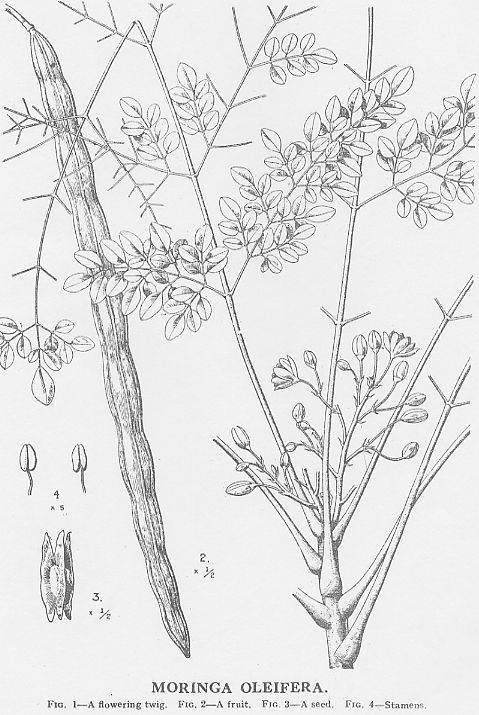

|
ECONOMICALLY
IMPORTANT PLANTS OF INDIA |
| Under-utilized Food and Fodder species and their wild relatives | Contributed by Ms.M.L Annapurna And Dr. Dhanapal, UAS, Bangalore |
Moringa oleifera Lam.
Taxonomic Details

----- Correct Name
----- Classification
----- Synonyms
----- Common Names
Other Biological Details
----- Habit and Habitat
----- Diagnostic Features
----- Reproductive Biology
---------- Breeding System
---------- Phenology
---------- Pollinators
---------- Seed Biology
----------Seed Germination
----------Cultivation
------ Cultivation
----- Major Pests and Diseases
Economic Potential and Uses
----- Parts Used
----- Uses
----- Harvesting Practices
----- Produce and Products
----- Chemistry
----- Processing Techniques
----- Other uses
----- Economic Potential to the
Country
----- Export Potential
Miscellaneous Information
Literature
Habitat: Alluvial land, Cultivated fields and Plains, forest opening, Forests,
Gardens and Roadsides, Hedges & Homeyards, Open localities, Outskirts of
Village, Plains, Planted, Rivers & Streams, Strems & rivers, Villages
and waste land.
BioticZone: Himalaya, Hindukush himalaya, Konkan plain, North West India, SubHimalayan
tracts, Tropical coasts, Tropics and Western Himalayas.
Soil: It prefers Sandy beds,
Altitude: 0-1 000 m, Mean annual temperature: 12.6 to 40 deg. C, Mean annual
rainfall: At least 500 mm
DIAGNOSTIC FEATURES
A small or medium-sized tree, about 10 m. high, Bark thick, soft, corky, deeply
fissured: young parts tomentose ; leaves usually tri-pinnate, leaflets elliptic;
flowers white, fragrant, in large panicles ; pods pendulous, greenish, 22.5-50.0
cm. or more in length, triangular, ribbed ; seeds trigonous with wings on angles.
REPRODUCTIVE BIOLOGY
Leaves usually tri-pinnate: leaflets elliptic; flowers white, fragrant, in large
panicles ; pods pendulous, greenish, 2
2.5-50.0 cm. or more in length, triangular, ribbed ; seeds trigonous with wings on angles.
Breeding System :
Phenology :
Under North Indian conditions, the tree sheds its leaves in December-January
and new leaves appear in February-March. They are followed by flowers and long
whip-like tender fruits, which ripen during summer. Sometimes, particularly
in S. India, flowers and fruits appear twice a year.
Pollinators:
Honey bees and other insects.
Seed Biology :
Seed Germination:
The tree can be propagated by seeds or from cuttings-the latter are preferred.
Plants raised from seeds produce fruits of inferior quality. The tree can lie
propagated by seeds or from cuttings; cuttings are preferred. Plants raised
from seeds produce fruits of inferior quality. Further, cuttings of fairly large
size, planted in moist soil, strike root readily and grow to sizeable trees
within a few months.
Moringa oleifera is easily established by cutting or by seeds. Seeds can be
sown either directly or in containers. No seed pretreatment is required and
seeds sprout readily in 1-2 weeks. Plants raised from seed produce fruit of
unpredictable quality. Shield budding is successful, and budded trees begin
to bear in 6 months and continue to give a good crop for 13 years. As it is
essentially a vegetatively propagated crop, breeding methods like single-plant
selection, mass selection and exploitation and maintenance of vigour are
transgressive.
Stem cuttings are usually preferred because they root easily. When grown for
its roots, the seeds are sometimes planted in rows like vegetables.
Cultivation:
It is often cultivated in hedges and home gardens. It grows in all types of
soils, except stiff clays, and thrives best in the tropical climate of South
India. There are not many named varieties of this tree in India. The tree can
be propagated by seeds or from cuttings- the latter are preferred. The plants
raised from seeds produce fruits of inferior quality.
Moringa is an extremely fast-growing tree, and within 1-3 months trees reach 2.5 m. Constant pruning of up to 1.5 m/year is suggested to obtain a thick-limbed and multibranched shrub. Trees are commonly grown for their leaves, and topping-out is useful to keep an abundant supply of leaves, pods and flowers within easy reach. Moringa oleifera responds well to mulch, water and fertilizer. Growth is stunted in areas with a high water table.
Soil type: A adapted to a wide range of soil types but does well in well drained clay or clay loam without prolonged waterlogging. Prefers a neutral to slightly acidic soil reaction, but it has recently been introduced with success in Pacific atolls where the pH is as high as 8.5.
MAJOR PESTS & DISEASES
The tree is not affected by any serious disease in India.
Pests: Two caterpillars and a stem borer are known to affect the tree.
Of these, the hairy caterpillar, Euperoctis mollifera Wlk., causes defoliation;
it is controlled .by spraying the tree with fish oil-rosin soap or BHC, or by
burning with lighted torch.
Diseases: The tree is not affected bv any serious disease in India. A
foot-rot, caused by Diplodia sp., has been observed in Madras.
Economic
Potential and Uses
Parts used:
Leaves,
Flowers Tender pods, Seeds, Roots.
Uses:
Harvesting Practices
A good tree yields as many as 1,000 fruits.
Produce and Products
An essential oil, phytosterol, waxes and resins. The bark yields a coarse
fibre.
Moisture. Protein. Fat. Minerals. fiber. carbohydrates. enregy. Calcium. Phosphrous. Iron.
Analysis of pods gave the following values: mois- ture, 86.9 ; protein, 2.5 ; fat (ether extr.), o. i ; carbo- hydrates, 3.7 ; fibre, 4.8 ; and mineral matter, 2.0%: calcium, 30; phosphorus, no; and iron, 5.3 mg./ 100 g.; copper (3.1 /^g./g.), iodine (18 /xg./kg.) and oxalic acid (0.01%) are present. The pods contain: carotene (as vitamin A), 184 i.u.; nicotinic acid, 0.2 mg. ; and ascorbic acid, 120 mg./ioo g. Pressed juice of the pods contains ascorbic acid oxidase.
The pods contain a globulin (N, 15.6 ; sulphur, I.58%) and a prolamin (N, 14.02 ; sulphur, 1.43%). The essential amino acids present in the total pro- teins are (g./i6 g. N): arginine, 3.6; histidine, 1.1 ; lysine, 1.5; tryptophan, 0.8; phenylalanine, 4.3; methionine, 1.4; threonine, 3.9; leucine, 6.5; isoleucine, 4.4 ; and valine, 5.4. Non-protein nitrogen forms 56.9% of the total nitrogen. The distribution of amino acids in the non-protein fraction is as follows: histidine, 4.6; arginine, 48.0; threonine, 19.5 ; valine, 27.5 ; methionine, 2.6 ; phenylalanine, 5.6; isoleucine, 15.0; leucine, 18.2 ; and tyrosine, 3.7 mg./100 g. ; lysine and tryptophan, traces; and cystine, nil. The pods are remarkably rich in free leucine.
The leaves are rich in carotene and ascorbic acid. Analysis gave the following values: moisture, 75.0 ; protein, 6.7; fat (ether extr.), 1.7; carbohydrates, '3-4 ; fibre, 0.9 ; and mineral matter, 2.3%: calcium, 440; phosphorus, 70; and iron, 7.0 mg./100 g. ; copper (1.1 g./g.) and iodine (51 g./kg.) are present. Leaves contain: carotene (as vitamin A), II,300 i.u. ; vitamin B,, 210 fig.; nicotinic acid, 0.8 mg. ; ascorbic acid, 220 mg. ; and tocopherol, 7-4 mg./100 g. Estrogenic substances and a pectin- esterase are reported to be present. Attempts have been made to prepare ascorbic acid concentrates by extracting leaves with water, concentration and dehydration. For this purpose, leaves are collected during the period of maximum vegetable growth ; the vitamin is fairly stable in aqueous extracts, the loss observed even after 3 days of storage being 25%. Ascorbic acid oxidase is elaborated in the leaves after the tree flowers and the vitamin is rapidly destroyed in aqueous extracts of leaves gathered after the flowering stage. The essential amino acids present in the leaf proteins are (g./i6 g. N): arginine. 6.0: histidine, 2.1; lysine, 4.3; tryptophan. 1.9: phenvlalanine, 6.4; methionine, 2.0: rhreonine. 4.9: leucine. 9.-;; isoleucine, 6.3; and valine. 7.1. The biological value and digestibility co-efficient of leaf proteins (ar ^% level of protein intake) are respectively 41",. and 77". - Non-protein nitrogen accounts tor ]6",, ot rhe total nitrogen of tender leaves. The nitrogen distril-iiiiton in the non-protein fraction is as follows: sol. Humiii N, ^.25 ; insol. humin N, 5.25 : amide N. 7.^9 : basic N. 34.21 ; and non-basic N. 47.37",,. Feeding trials with rats have shown that drumstick leat powder has a high supplementary value to rice diet
The flowers contain traces of alkaloids ; they also contain a wax (m.p. 69-72° ; acid val., 10.5 ; sap. val., 29.8 ; and unsapon. matter, 75.5%), quercetin and kaempferol ; the ash is rich in potassium and calcium. Seed oil-The seeds (av. wt. of seed, 0.3 g. ; shell, 26-30% ; kernel, 70-74%) are oleaginous. Analysis of the kernel gave the following values: moisture, 4.0 ; crude protein, 38.4; fatty oil, 34.7 ; N-free extr., 16.4 ; fibre, 3.5 ; and mineral matter, 3.2%. A pale yellow non-drying oil with a mild pleasant flavour can be extracted from the kernel ; it deposits stearin on chilling. The characteristics of the oil are as follows: sp. gr.30", 0.8984; n30', 1.4652; acid val., 3.5 ; sap. val., 182.2 ; iod. val., 64.2 ; R.M. val., 0.44 ; acet. val., 11.5; Hehner val., 91.6; and unsapon. matter, 3.05%. The component fatty acids of the oil are: palmitic, 9.3; stearic, 7.4; behenic, 8.6; and oleic, 65.7% ; the presence of myristic and lignoceric acids has been reported by some authors ; glycende composition : trisaturated, i .40 ; disaturated mono- unsaturated, 23.47 ; monosaturated di-unsaturated, 25.62; and tri-unsaturated, 49.51%. The proportion of acids found in oil samples from Haiti and Trinidad are reported to be somewhat different
Processing TechniquesAll parts of the tree are considered medicinal and used in the treatment of ascites, rheumatism, veno- mous bites and as cardiac and circulatory stimulants.
The root of the young tree and also root bark are rubefacient and vesicant. The leaves are rich in vitamins A and C and are considered useful in scurvy and catarrhal affections ; they are also used as emetic. A paste of the leaves is used as an external application for wounds. Flowers are used as tonic, diuretic and cholagogue. The seeds are considered antipyretic, acrid and bitter. The seed oil is applied in rheumatism and gout.
The oils from the seeds of M. oleifera and of M. peregrina Fiori syn. M. aptera Gaerlin. are known in the trade as Ben or Behen oil, used locally for edible purposes, illumination and in cosmetics. Ben oil was erroneously reported to be resistant to rancidity and considered particularly suitable for enfolder age and as a lubricant for fine machinery. The oil turns rancid like any other vegetable oil. It resemble; olive oil and may be of some value as a constituent (if non-yellowing. non-drying, plasticising alkyds)
The cake or meal, left after the extraction of oil from the kernels, has a bitter taste. It is used as a fertilizer: it contains: crude protein, 58.93; lime (CaO). 0.40 : phosphoric acid (P:A), i .09 ; and potash (K,0). 0.80% (Adriaens, 82 ; Jamieson, 39). Alkaloids-The root bark contains two alkaloids (total alkaloids. 0.1%), viz. moringine which is identical with benzylamine and moringinine belonging to the sympathomimetic group of bases. The latter acts on sympathetic nerve endings, producing a rise in blood pressure, acceleration of heart beat and con- striction of blood vessels ; it inhibits the tone and movements of involuntary muscles of the gastro- intestinal tract and relaxes bronchioles.
An alkaloid, named spirochin, has been isolated from the roots ; in high doses, it paralyses the vagus nerve. The root bark contains traces of an essential oil with a pun- gent smell, phytosterol, waxes and resins. The bark yields a coarse fibre.
Antibiotics-Pressed juice of the leaves of the plant show strong antibacterial activity against Micro- coccus pyogenes var. aureus, Escherichia coli and Bacillus subtilis. The leaf juice is bacteriostatic in a dilution of i : 1,000,000.
The roots contain an active antibiotic principle, pterygospermin, which is obtained as a low-melting unstable substance with a characteristic odour, soluble in organic solvents but sparingly soluble in water. It readily decomposes to benzyl isothiocyanate ; it is more stable in phosphate buffer than in water. Pterygospermin inhibits the growth of many Gram-positive and Gram-negative bacterium including Micrococcus pyogenes var. aureus. Bacillusi subtilis, Escherichia coli, Aerobacter aurogenes, - Salmonella typhosa, S. enteritides, S. paratyphosus, i Shigella dysenteriae, Mycobacterium phlei and - M. tuberculosis var. hominis. In higher concentrations (7-10mg./cc.), it is active against fungi. It is stable in the presence of blood and gastric juice but , breaks down in the presence of pancreatic juice. Its effect is counteracted by thiamine and glutamic.
Flora of Akola District, Maharastra,S.Y.Kamble and S.G.Pradhan,1988,Library,Atree,Bangalore.
www.treeandseeds.com home1.htm